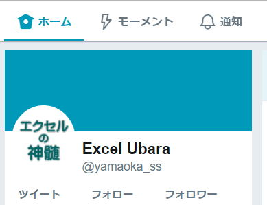

エクセル関連ツイートNo4

VBEのこの左下のボタン
「プロシージャの表示」「モジュール全体を連続表示」
このボタンの説明ってどこにも書いた覚えがないです。
といいますかVBEの全体としての説明を書いてない。
とはいえVBEの機能を全部説明するのは無理、
VBA全体を理解しないとどのみち意味が通じないでしょうし。
私のサイトでは、デスクワークを自動化するためのVBAに限定しているので、
xorは使わなくて良いとしていて、
.value=.valueはちゃんと説明しています。
それは目的達成のための優先順位であり、プログラミング全般の話ではありません。
PowerQueryでoracleに接続してみた。
ODBCとOLE
DBどちらも接続できる事は確認できた。
(データベースからのoracleは使えないのfお約束)
ただ、やたらと遅くないですか、仕方ないのですかね。
それと、やはりDBの知識が相応に無いと厳しい感じ。
もっと手軽に使えるようになると良いかなーと。
ユーザーにデータ取得するだけならこれでご自由にどうぞといえるようなものに。
ただし、簡単な使い方があるのかどうか詳しく見てないので、まあとりあえずの印象ということで。
サブフォルダ取ってきてくれないのは、何とも悲しい・・・
自分が分かるからと言ってそれで良いというのは仕事としては半人前。
仕事とは自分が作り上げたものを他者（後輩等）に引き継いで初めて完結するものです。
そして自分はさらに次のステップに進むものです。
しかしブロック構文はForだけではなく、
Do,If,Select Case,With
ネストの話としてForだけを取り上げても片手落ちな気がします。
インデントが最優先です。
しかる後、Next カウンタを書くかどうかという話です。
多いと「うっとおしい」といわれ、少ないと「間違った」といわれたり。
重要だから2回確認メッセージ出しても良く読まずに進む人はいるので、
根本的な解決策は「よく確認してね」と伝えるしかない場合が多くなる。
順々に作れば完成しますが、とんでもなく長い数式になる事は当然あります。
作業列を使えば良いのですが、なかなかそれが出来ずに苦労していることも。
ダメだというのは簡単だけど、解決策を同時に提示しないとそれこそダメですね。
運動会プログラムもコンピュータープログラムも同じ感覚でいます。
コンピュータープログラムの良さは私のPC操作時間を劇的に減らしてくれるのが良さです。
でもPCに向かう時間が減らない、というよりむしろ増えるのはなぜなのか、、、
右クリックからのAltからのクリック
滅多に必要にはなりませんが、
マニュアルの類とかで、ダイアログを別のエクセルに貼り付けしたいとか、時々あるにはある。
1クリックでできるようにならないものかと、ちょっとイラっとしたり。
小学校でプログラミング授業が始まろうという昨今ですが、
まずは、こういうところから変革していく必要があります。
そもそもアレルゲンは何なのか、
エクセルそのもの、マクロという呼び名、、、
.Value付けるのと省略するのと、
どっちの処理速度が速いか、、、
「習うより慣れろ」本当にそうだと思います。
ただ言えるのは、若い人ほど慣れるのが速いのは間違いない。
だからこそ若いうちに色々チャレンジしたほうが良いと思う。
あれれ、改行されちゃった、
VBEがアクティブだった。
「ホバーしたときに非アクティブ・ウィンドウをスクロールする」
にしてるとたまに勘違いしてしまうことがある。
ショートカットならではの誤操作というところか。
タスクバーのExcelを右クリック→Excel→Alt+左クリック
「新しく別のExcelを起動しますか?」
たまにAltが入らないときもあるけど…
ただ、実行中のマクロに全く影響がないとは言えない。
良い子はマクロが終わるの待ちましょう。
A1セルに住所として、
=LEFT(A1,MIN(IF(ISNUMBER(MID(A1,ROW(OFFSET($A$1,0,0,LEN(A1),1)),1)+0),ROW(OFFSET($A$1,0,0,LEN(A1),1)),LEN(A1)+1))-1)
Ctrl+Shif+Enter
それなりに出たけど、"
それにしても、この数式を説明するのは長文になるので難しいですよね。
そもそもSetって省略できるように変更してもらえないものですかね。
これの根本的な解決策は、、、ない
それで思い出したのですが、
上から万年カレンダーを作れと言われたらしく、
曜日は何とかなるけど祝日はどうしたら良いかと聞かれたことがあります。
よくよく聞くと1万年後の祝日の求め方を聞きたかったらしい。
いや、それは、、、
明日の事も分からない世の中で、それを考えるとは大したもんだと逆に感心しちゃいました。
「ピボットテーブル/ピボットグラフ ウィザード」ってどのバージョンからアイコン消えたのか、、、たぶん2007だと思うのですけど。
絶対にないのか…絶対に無理なのか…
コンストラクタで引数を渡せるかどうかはあまり気にならないのだけど、
（コンストラクタで引数受け取れても両方用意したりするし）
それよりインスタンスの作成を動的に切り替えられれば…
入力文字 → 表示形式
4/7 → m"月"d"日"
2019/4/7 → yyyy/m/d
h31/4/7 → [$-ja-JP]ge.m.d
0 4/7 → # ?/?
4,567 → #,##0
\567 → \#,##0;[赤]\-#,##0
$567 → $#,##0_);[赤]($#,##0)
56% → 0%
Ctrl+Shift+~ で標準書式に戻せます。
1行で書く代わりに別場所でやってたりだけで、あまり意味を感じるものは見つからなかった。
それなら昨日書いたCallByNameで、
Set 変数 = CallByName(New クラス, "メソッド", VbMethod, "引数")
メソッドでMeを返せば良いよね。
でも、それを言ったら話が終わっちゃいますか。
翌日、「ケーブルつないで写真見えたから、ケーブル抜いたら写真が見られなくなった、写真が消えた」
と言われた。
私は…
エクセルの使い方くらい、どんな使い方してもたかが知れてる。
とはいえ、ちゃんと覚えてちゃんと使ってください。
その機能を使うことで得られることと、その機能を使うことで失うことを天秤にかけることになります。
どっちに傾くかは、どうしても人それぞれの判断で違ってくるのは仕方ないと思います。
「何も足さない、何も引かない」
(a)
If A <> B And C <> D Then
…
End If
(b)
If Not A = B And Not C = D Then
…
End If
(c)
If Not (A = B Or C = D) Then
…
End If
(d)
If A = B Or C = D Then
Else
…
End If
明日等の来店客数を予測して、必要なつり銭準備金を用意するとき、各紙幣・棒銀の必要数を算出、余裕を持たせるなら+でどれだけってエクセル作ってました。かなり昔のことです。
エクセルの数式はもちろん知らないと始まりませんが、それ以前に業務を知らないと作れません。
・日本語で考え(書い)てから英訳
・いきなり英文を書く
この差は大きい。
プログラミングも同じように思う。
・日本語で考え(書い)てからコード化
・いきなりコードを書く
本当はもっと細かい段階があるし、各段階での教え方は根本的に違うはずです。
ただ見るのではなく、石の流れを見なさい。
みたいなことを言ってたと記憶してます。
意識を切らさず全体の流れを見ることから始めてください。
その為に書かれたサンプルコードを読んでください。
それを書くのがなかなか…
それはまあ、何がしたいかってことで変わってくるのでですが、
とりあえずやってみたいという事なら、VBAかGASが良いと思います。
たった今から始められます。
ある程度プログラミング覚えたら、次はDBに関して少しでもやったほうが良いと思います。
SQL覚えると別の世界に入っていける気がします。たぶんね。
その為の「方便」というのもあってよいだろうと。
「だれでも一度はアセンブラを学んでおこう！」なんて記事もあったけど、必要ない人の方が大多数じゃないですかね。
Tweets by yamaoka_ss
同じテーマ「エクセル雑感」の記事
エクセル関連ツイート
エクセル関連ツイートNo2
エクセル関連ツイートNo3
エクセル関連ツイートNo4
エクセル関連ツイートNo5
VBAコーディング規則に関する連ツイ
将棋とプログラミングについて～そこには型がある～
「VBAによる解析シリーズその2 カッコ」をやってみた
ツイッターで出されたVBAのお題をやってみた
「VBAで導関数を求めよ」ツイッターのお題をやってみた
ツイッターのお題「君の名は？」
新着記事NEW ・・・新着記事一覧を見る
VBA100本ノック 100本目：WEBから100本ノックのリストを取得｜VBA練習問題（3月3日）
VBA100本ノック 99本目：自動席替え（行列と前後左右が全て違うように）｜VBA練習問題（3月2日）
VBA100本ノック 98本目：席替えルールが守られているか確認｜VBA練習問題（3月1日）
VBA100本ノック 97本目：Accessデータを取得（グループ集計）｜VBA練習問題（2月27日）
VBA100本ノック 96本目：Accessデータを取得（マスタ結合&抽出）｜VBA練習問題（2月26日）
VBA100本ノック 95本目：図形のテキストを検索するフォーム作成｜VBA練習問題（2月24日）
VBA100本ノック 94本目：表範囲からHTMLのtableタグを作成｜VBA練習問題（2月23日）
VBA100本ノック 93本目：複数ブックを連結して再分割｜VBA練習問題（2月22日）
VBA100本ノック 92本目：セルの色を16進で返す関数｜VBA練習問題（2月20日）
VBA100本ノック 91本目：時間計算（残業時間の月間合計）｜VBA練習問題（2月19日）
アクセスランキング ・・・ ランキング一覧を見る
1.最終行の取得（End,Rows.Count）｜VBA入門
2.RangeとCellsの使い方｜VBA入門
3.変数宣言のDimとデータ型｜VBA入門
4.マクロって何？VBAって何？｜VBA入門
5.Range以外の指定方法（Cells,Rows,Columns）｜VBA入門
6.セルのコピー&値の貼り付け（PasteSpecial）｜VBA入門
7.繰り返し処理（For Next)｜VBA入門
8.セルに文字を入れるとは（Range,Value）｜VBA入門
9.マクロはどこに書くの（VBEの起動）｜VBA入門
10.とにかく書いてみよう（Sub,End Sub）｜VBA入門
このサイトがお役に立ちましたら「シェア」「Bookmark」をお願いいたします。
記述には細心の注意をしたつもりですが、
間違いやご指摘がありましたら、「お問い合わせ」からお知らせいただけると幸いです。
掲載のVBAコードは動作を保証するものではなく、あくまでVBA学習のサンプルとして掲載しています。
掲載のVBAコードは自己責任でご使用ください。万一データ破損等の損害が発生しても責任は負いません。